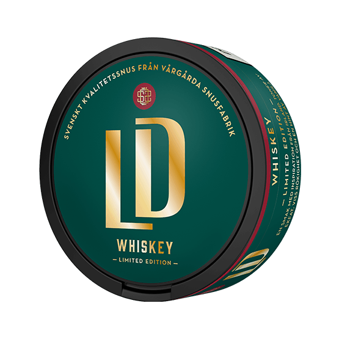
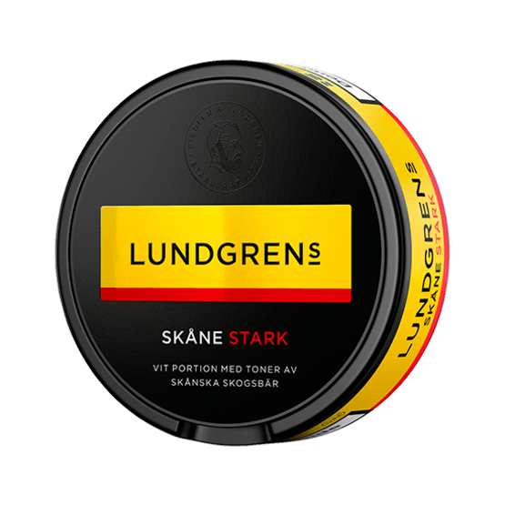

REVIEWS
LD Whiskey Orginal
Snusen på agendaen er en LD whiskey, limited edition. Etter nøye testing (en hel boks) har jeg vurdert denne boksen slik:
- Smak: 7/10
- Konsistens: 6/10
- Styrke: 4/10
- Holdbarhet: 7/10
Denne snusen får virkelig fram den søte whiskeysmaken den reklamerer for, smaken holdt gjennom hele oppholdet av snusen i leppa. Snusposen var myk, men inneholdt noen klumper som ikke gjorde den helt smooth. Dette er trekk. Innholdet av nikotin er 10mg/pr pose, noe som rangerer denne på middels styrke. Det var ikke noe kick, men avhengiheten ble stimulert. Snusen brukte ca 30min før den begynte å dryppe ned på tenna. Da jeg er en erfaren snuser og liker denne saften, er dette helt perfekt. Overall får LD whiskey en 6.5/10 fra meg. Bra snus for den som liker whiskey!
Lundgrens Skåne Stark
Snusen på agendaen er en Lundgrens skåne stark, Etter nøye testing (en hel boks) har jeg vurdert denne boksen slik:
- Smak: 10/10
- Konsistens: 8/10
- Styrke: 7/10
- Holdbarhet: 9/10
Denne snusen er virkelig en favoritt. Lundgrens Skåne stark har en mild smak av bark og tre. Dette er en snus som passer til alle anledninger, enten om det er skole, jobb, bursdag, brylupp eller hva nå enn du skal være i, så passer denne snusen. Snusen har en god konsistens, men er litt myk, det er litt som å ta på nysnø. Stark versjonen inneholder litt mer nikotin 17,3mg pr pose, så du kjenner at du har den i kjeften. Med sin utrolige holdbarhet, starter snusen å renne etter en times tid i leppa, noe som gjør at denne snusen kan ligge timesvis å ruge i overleppa. Helt fantastisk. Dette er hands down, noe av det beste på markedet.